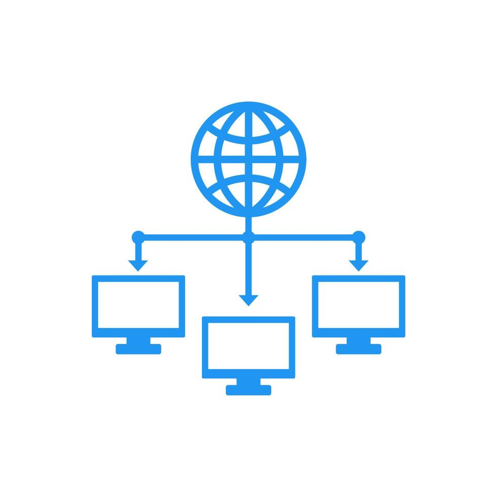
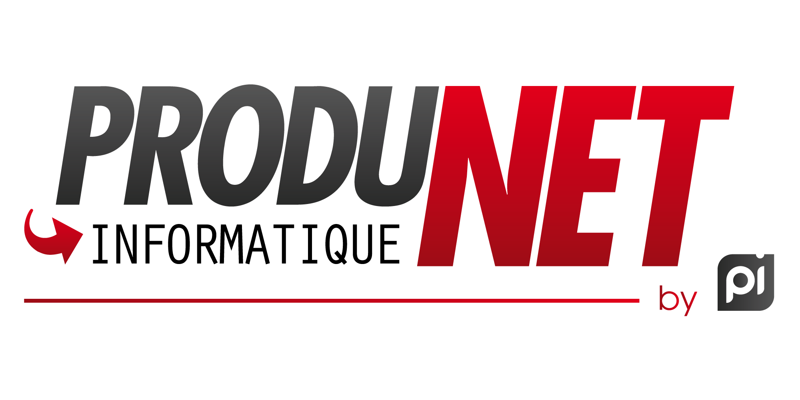

Mes Projets
Voici mes projets qui touchent l'informatique
SAE1.01

Implémentation d'un besoin client
Pour ce projet d'initiation au développement, nous devions créer une application en java et rédiger un compte rendu en anglais. Cette application devait trier des dépêches dans plusieurs catégories.
Nous développions en binôme ce projet :
Je m’occupais de l’implémentation pour faire un algorithme de tri et faire une IA pour générer les paramètres de l’algorithme.
Mon binôme lui s’occupait de la comparaison des approches qui consiste à améliorer le temps de calcul de l’algorithme.
Ce projet m’a permis d’avoir un avant-goût du monde professionnel car nous avions une contrainte à réaliser et une Dead-line. Il m’a aussi permis de me focaliser sur la rédaction d’un carnet de bord pour préparer l’oral de présentation pour les clients. J’ai aussi acquis des compétences comme implémenter et élaborer des conceptions, analyser un problème avec méthode, comparer des algorithmes.
SAE1.02

Comparaison d'approches algorithmiques
SAE1.03

Installation d'un poste pour le développement
Pour ce projet d’installation d'un poste pour le développement, je devais créer un poste de travail Debian sur Linux sur une VM (Machine Virtuelle). Le but à la fin de ce projet est d’installer et configurer la VM (et d’installer des packages).
Le procédé de ce projet était :
Installer l’image iso de Debian (et vérifier l’installation)
Créer une VM avec cette image
Installer Debian sur la VM et le configurer
Installer des logiciels et des packages
Ce projet m’a permis d'identifier les différents composants (matériel et logiciels) d’un système numérique, d’utiliser les fonctionnalités de base d’un système multitâches/multi-utilisateurs et d’installer et configurer un système d’exploitation et des outils de développement.
SAE1.04

Création d'une base de données
Pour ce projet, le but était de créer une base de données et de l'utiliser.
Nous travaillions en binôme :
Je m’occupais de la partie création et gestion de la base de données
Mon binôme lui s’occupait de la partie traitement et analyse des données.
Grâce à ce projet, j’ai acquis plusieurs compétences comme créer des tables SQL ou encore remplir la base de données.
SAE1.05

Recueil de besoins
Ce projet a pour but de créer un site web pour une entreprise compréhensible pour des élèves de 3ème.
Lors de ce projet, nous étions 4 et chacun devait aller chercher, trier, traiter les informations trouvées pour enfin les mettre sur le site web créé (en groupe) pour pouvoir faire une présentation orale au client.
Grâce à ce projet, j’ai acquis plusieurs compétences comme utiliser le langage d’entreprise et le simplifier ou encore faire un site web en groupe, ce qui change de le faire tout seul car on doit comprendre le code de ses collègues avant de pouvoir le compléter. Mais surtout, ce fut mon premier gros projet avec une équipe de plus de deux personnes.
SAE1.06

Découverte de l'environnement économique et écologique
Mega SAE 3

Developpement et deploiment d'une applicaion
Pour ce projet, qui était notre projet principal pour ce premier semestre du BUT2, nous devions créer un site web pour un serious game destiné à des élèves de terminale "Service et numérique" nommé "The Game", avec la technologie de notre choix, et l'implémenter sur un serveur créé de zéro.
Nous étions 7 durant ce projet : 2 spécialisés dans le parcours B (déploiement d'applications communicantes et sécurisées) et 5 dans le parcours A (Réalisation d'applications : conception, développement, validation).
Les membres du parcours B devaient s'occuper de créer et configurer le serveur web qui hébergerait l'application et aider
à coder avec les membres du parcours A lorsque nous avions fini nos tâches. Le serveur était donc configuré avec Apache et
un compilateur pour le code Rust.
Les membres du parcours A s'occupaient de coder le site web en Rust.
Pour
la partie conception, tout le monde était réuni pour concevoir le jeu, le scénario, le modèle et le graphisme.
Ce projet m'a permis de réunir toutes mes compétences acquises durant ma première année et de les approfondir. De plus, il m'a permis de m'aventurer dans un domaine que je ne pensais pas explorer : le web. J'ai pu utiliser plusieurs technologies durant ce projet : HTML, CSS et Rust, qui étaient une première pour la plupart du groupe. J'ai également pu m'améliorer dans la configuration d'Apache pour qu'il soit compatible avec Rust, ainsi que dans la configuration de la sécurité du serveur lui- même.
Game Jam
Developpement d'un jeu en python
Pour ce projet, il s'agissait d'une semaine dédiée à la création d'un jeu à partir de zéro en équipe de 4, en utilisant Pygame, un module Python dédié à la création de jeux. Nous avons conçu le scénario, les graphismes et le code.
Ce jeu devait être un serious game sur le thème "Le merveilleux monde de l'IUT". Nous avons donc choisi le nom C.A.S.A (Comment Avoir Son Année), reprenant le gameplay du célèbre jeu The Escapists avec des mini-jeux de rythme.
Ce projet m'a permis d'acquérir de nouvelles compétences, notamment la capacité à travailler dans un délai très court. Nous avions de lundi à vendredi pour le présenter, ce qui nous a obligés à nous organiser efficacement, à coder et à concevoir le jeu en un temps limité.
SAE4.1
Creation d'un réseau d'entreprise
Pour ce projet, nous devions créer un réseau pour une entreprise imaginaire. Nous avons donc choisi de créer le réseau interne de l'entreprise PMS (Pimp My Ski). Nous étions 4
Réseaux séparés et interconnectés par un routeur, Routeur, Pare-feu, Proxy DHCP, Serveurs DHCP multiples, Serveurs DNS multiples, Serveurs de fichiers, Serveurs DNS supportant DoT/DoH, Supervision du réseau et des serveurs, Annuaire LDAP, Serveur de fichiers NFS sécurisé, Script d'automatisation.
Ce projet m'a permis de me plonger dans le monde de l'administration système et de m'habituer à la documentation technique.
Stage
Stage chez ProduNet
Du 29 avril au 21 juin, j'ai effectué un stage chez ProduNet, une entreprise spécialisée dans les solutions informatiques pour entreprises et particuliers. Le principal objectif de ce stage était de sécuriser l'ERP (Enterprise ressource planning) "Chiffro" contre les attaques, notamment en implémentant ModSecurity, un module de pare-feu (Système de sécurité de réseau limitent le trafic) d'applications web pour Apache (serveur web).
WIP
Work in Progres
Comming soon